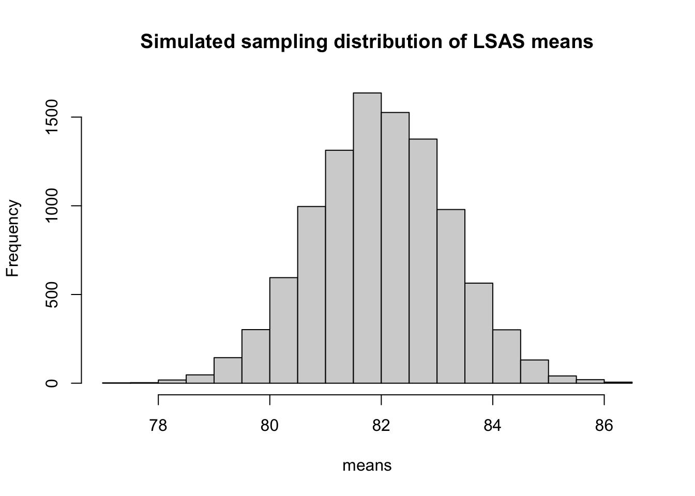
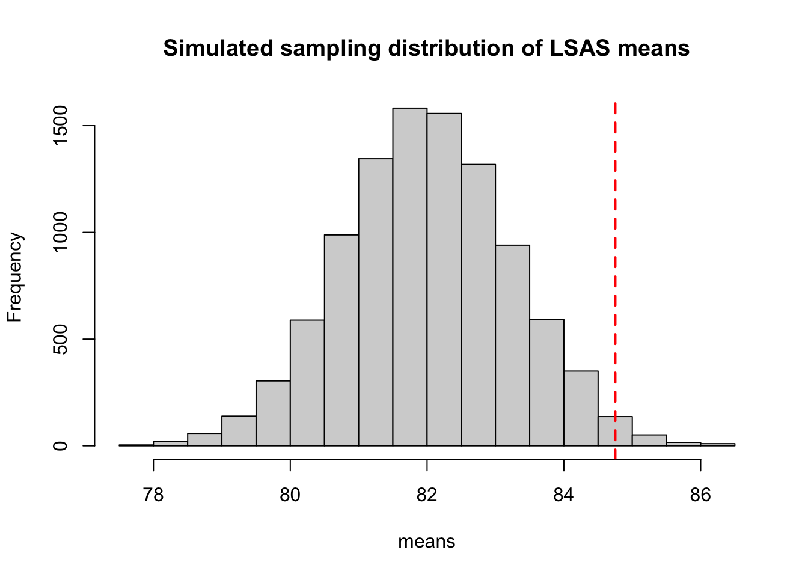
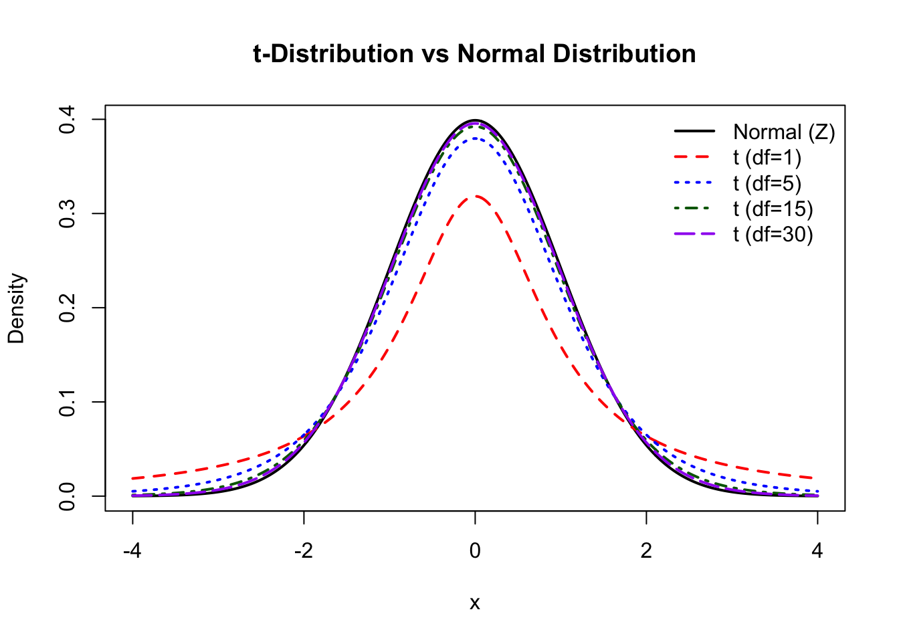
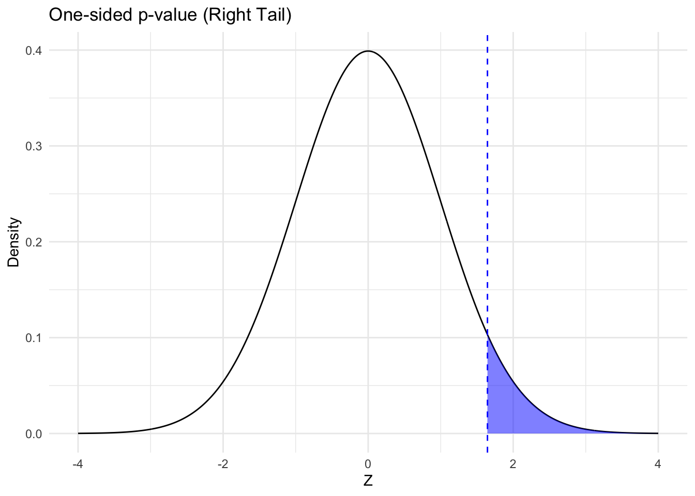
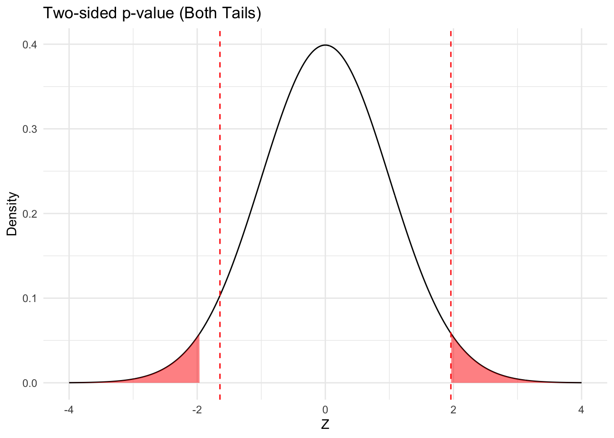

library(here)
library(tidyverse)
d_bl <- read_rds(here("data", "steps_baseline.rds"))P-values and confidence intervals
Load packages and data
The law of large numbers brings us to the concept of probability. In frequentist statistics, probability is defined as the long run frequency of an event as the number of events approach infinity, \(\infty\). For instance the proportion of heads in an infinite number of coin tosses will approach 0.5.
P-values
Probability - defined as the long-run frequency of an event occurring - is very much used in research to get an idea of how probable our observed data is, given some hypothesis of interest. In probability notation \(P(Data|Hypothesis)\).
For instance we might have an hypothesis the the mean of LSAS-SR is 82 in the population. We can determine how probable our data would be under this hypothesis, by investigating how often we would expect to get our observed sample mean if this (null)hypothesis was true.
For this we would need the sampling distribution of mean LSAS-SR scores in samples of 181 people (the size, \(n\), of our sample), if the true population mean was 82. One way to get this would be to simulate say 10 000 samples of LSAS-SR scores, from a population with a true mean of 82. To simulate this, we also need to know the spread (standard deviation) of the true population. We don’t know this, but let’s assume it is the same as in our sample.
Below, the function rnorm() is used to take a random sample of 181 values from a normal distribution with a mean of 82 and a standard deviation 16.5 (same as in out sample). We use a for loop to repeat this sampling 10 000 times and save the mean values of each sample in the vector called means.
n_samples <- 1e4 # the number of samples
smp_size <- 181 # the size of our samples
means <- rep(NA, n_samples) # an empty vector to contain our mean values
for (i in 1:n_samples) {
x <- rnorm(smp_size, mean = 82, sd = sd(d_bl$lsas_screen))
means[i] <- mean(x)
}
hist(means, main = "Simulated sampling distribution of LSAS means")
We can use this simulated sampling distribution to see how probable our observed LSAS-SR mean is if the (null)hypothesis that the true mean is 82 would be correct. First let plot the sampling distribution again, and show the observed LSAS-SR mean as a vertical line.
hist(means, main = "Simulated sampling distribution of LSAS means")
abline(v = mean(d_bl$lsas_screen), col = "red", lwd = 2, lty = 2) # vertical line showing the observed LSAS-SR mean
We can also quantify the probability by calculating, the proportion of times that a sample mean would be equal to or greater that our observed mean, IF the true population mean was 82. This quantity is the very (in)famous p-value.
mean(means >= mean(d_bl$lsas_screen)) # proportion of simulated means that are larger than our observed mean[1] 0.0108If we find this simulation exercise a bit tedious, we could also use theoretical distributions for the sample means to calculate our p-value. The t-distribution can be used to estimate the spread to the sample means when the population variance is unknown and the sample variance is used to approximate it. It is very similar to the normal distribution, but has heavier tails that accounts for the uncertainty produced by using the sample variance instead of the true population variance when estimating the standard error of the sampling distribution. However, when the sample size increase, the t-distribution will come closer and closer to a normal distribution (also known as a z-distribution when standardized to have mean=0 and sd=1).
# Set up the plot range
x_range <- seq(-4, 4, length = 500)
# Plot standard normal distribution
plot(x_range, dnorm(x_range),
type = "l", lwd = 2, col = "black",
ylab = "Density", xlab = "x", main = "t-Distribution vs Normal Distribution"
)
# Add t-distributions with different degrees of freedom
lines(x_range, dt(x_range, df = 1), col = "red", lwd = 2, lty = 2)
lines(x_range, dt(x_range, df = 5), col = "blue", lwd = 2, lty = 3)
lines(x_range, dt(x_range, df = 15), col = "darkgreen", lwd = 2, lty = 4)
lines(x_range, dt(x_range, df = 30), col = "purple", lwd = 2, lty = 5)
# Add a legend
legend("topright",
legend = c("Normal (Z)", "t (df=1)", "t (df=5)", "t (df=15)", "t (df=30)"),
col = c("black", "red", "blue", "darkgreen", "purple"),
lwd = 2, lty = 1:5, bty = "n"
)
The probability of getting a a sample mean that is greater or equal to our observed mean can be calculated by transforming our observed mean to a t-value and compare it to the t-distribution.
The t-value of our mean \(\bar{x}\) under the null hypothesis that the population mean is \(\mu\), is given by the formula:
\[ t = \frac{\bar{x} - \mu}{SE} \]
Replacing these greek letters with our actual values \(\bar{x} = 84.75\), \(\mu = 82\), and \(SE=1.22\), we get:
se <- sd(d_bl$lsas_screen) / sqrt(nrow(d_bl))
x_bar <- mean(d_bl$lsas_screen)
t_value <- (x_bar - 82) / se
t_value[1] 2.24774Now let’s see the probability of getting a value larger or equal to this - our one-sided p-value! For this we use the pt() function, that provides the cumulative probability up until a given t-value. 1 minus this cumulative probability gives the probability of values equal or above the given t-value.
1 - pt(t_value, df = 180)[1] 0.01290324
z-values and t-values
When the sample size increases, the t-distribution approaches the z-distribution and these estimates become very similar. As a general rule of thumb, it is fine to use z-values rather than t-values for sample sizes larger than 200.
We could also get a very similar p-value from the z-distribution (although we would assume we have the population variance for out calculation of the standard error). If this was a proportion, a z-test would be the one to use, since we are not using any estimates when calculating the standard error.
1 - pnorm(t_value)[1] 0.01229639Very similar to our simulated p-value above! More conveniently, of course, we could get this p-value using the t.test() function.
t.test(d_bl$lsas_screen, mu = 82, alternative = "greater")
One Sample t-test
data: d_bl$lsas_screen
t = 2.2477, df = 180, p-value = 0.0129
alternative hypothesis: true mean is greater than 82
95 percent confidence interval:
82.72756 Inf
sample estimates:
mean of x
84.75138
One-sided and two-sided p-values
What we have calculated, bow in three different ways, is the one-sided p-value. This is because we only looked at the probability to get data equal to or greater than our observed data, given that the null-hypothesis was true.
If we wanted to see the probability of getting data equal or greater than our observed data OR equal or less than out observed data under the null-hypothesis, we would want a two-sided p-value. Since the sampling distribution is symmetrical, we could get this by multiplying of one-sided p-value by 2.


Code for the two-sided p-value
# manual code
se <- sd(d_bl$lsas_screen) / sqrt(nrow(d_bl))
x_bar <- mean(d_bl$lsas_screen)
t_value <- (x_bar - 82) / se
(1 - pt(t_value, df = 180)) * 2[1] 0.02580648# or using the t-test function
t.test(d_bl$lsas_screen, mu = 82, alternative = "two.sided")
One Sample t-test
data: d_bl$lsas_screen
t = 2.2477, df = 180, p-value = 0.02581
alternative hypothesis: true mean is not equal to 82
95 percent confidence interval:
82.33602 87.16675
sample estimates:
mean of x
84.75138
Exercise: P-value for PHQ-9 Mean
Calculate the p-value for the null hypothesis that the mean PHQ-9 value in the underlying population is 9, and describe in words what this number means.
Exercise: P-value for Proportion of Men
Calculate the p-value for getting our observed proportion of men, \(\hat{p}\), if the true population proportion, \(p\), was 50% or more using a z-test.
HINT: use the standard error of the proportion: \[ \mathrm{SE}(p) = \sqrt{\frac{p(1 - p)}{n}} \]
and combine with the formula for the z-scores
\[ z= \frac{p - \hat{p}}{SE} \]
Exercise: Effect of Sample Size on P-value
Modify the simulation code for the sampling distribution above to determine what would happen to the p-value if the sample size was 10, 100 or 1000.
Confidence intervals
Using the standard error, we can also calculate the confidence interval, defined as an interval that, if computed on a repeated set of samples, would contain the true population statistic 95% of the times.
When the sample standard deviation is used, we get the confidence intervals by taking the observed mean and adding or subtracting the t-value of the desired percentiles of the sampling distribution (indicated by the asterix) times the standard error.
\[ \text{CI} = \bar{x} \pm t^*\ \frac{s}{\sqrt{n}}\]
If we knew the stardard error of the population, we could substitute the sample variance \(s\) for the population variance \(\sigma\), and use z-values instead of t-values. For 95% confidence intervals, the z-value is 1.96.
\[ \text{CI} = \bar{x} \pm z^*\frac{\sigma}{\sqrt{n}} \]
For a proportion, the confidence intervals becomes:
\[ \hat{p} \pm z^* \sqrt{\frac{\hat{p}(1 - \hat{p})}{n}} \]
Confidence intervals for proportions
This confidence intervals for proportion, known as Wald confidence intervals, is easy to compute. However, since it uses the sample proportion to estimate the population proportion, they can be erratic, especially when \(\hat{p}\) approach 0 or 1. We therefore recommend using more advanced confidence intervals, calculated by statistical software, for instance using the function prop.test().
Now let’s use these formulas to calculate the confidence interval of the mean of LSAS-SR
t_value <- qt(1 - 0.025, 180) # the t-value for a 95% confidence interval with 180 degrees of freedom
se <- sd(d_bl$lsas_screen) / sqrt(nrow(d_bl)) # standard error of LSAS-SR
ucl <- mean(d_bl$lsas_screen) + t_value * se # the upper confidence limit
lcl <- mean(d_bl$lsas_screen) - t_value * se # the lower confidence limit
print(c(lcl, ucl))[1] 82.33602 87.16675We can also use the t.test() function to get this interval
t.test(d_bl$lsas_screen, conf.level = 0.95) # For a 95% CI
One Sample t-test
data: d_bl$lsas_screen
t = 69.238, df = 180, p-value < 2.2e-16
alternative hypothesis: true mean is not equal to 0
95 percent confidence interval:
82.33602 87.16675
sample estimates:
mean of x
84.75138 Let’s also see what happens if we use z-values (for 95% confidence intervals, the z-value is approx 1.96)
se <- sd(d_bl$lsas_screen) / sqrt(nrow(d_bl)) # standard error of LSAS-SR
ucl <- mean(d_bl$lsas_screen) + 1.96 * se
lcl <- mean(d_bl$lsas_screen) - 1.96 * se
print(c(lcl, ucl))[1] 82.35221 87.15055
Exercise: Z-scores vs T-scores for Confidence Intervals
Explain why the confidence intervals calculated using z-scores are narrower than the ones using t-scores.
Exercise: 95% Confidence Interval for PHQ-9
Calculate the 95% confidence interval for PHQ-9, and describe in words what these numbers mean.
Exercise: Wald Confidence Interval for Proportion of Men
Calculate the 95% Wald confidence interval for the proportion of men in the dataset using the formula above and interpret its meaning.
Exercise: Comparing Wald vs prop.test() Confidence Intervals
Compare this to what you would obtain using the function prop.test() in R.
Exercise: Interpreting Confidence Intervals in Context
Reason about the meaning and interpretation of the confidence intervals you have calculated in the context of how the actual STePs study was performed. The study can be found at: https://www.nature.com/articles/s44184-024-00063-0